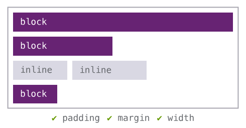
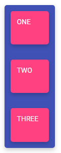

Angular Flex Layout
Flex Layout + directives Angular
Sommaire
- Rappels sur Flex Layout
- Présentation du module Angular Flex Layout
- Demos
Principaux layouts CSS
- Inline / Block layout 
- Table / Grid layout
- Positionned layout
- Flex Layout
Flex Layout
- Aussi appelé Flexbox CSS
- W3C Candidate Recommendation (2017)
- Module CSS proposant un nouveau type de layout
Concept
- Proposer une manière plus efficace pour placer, aligner et définir la taille de ses éléments dans un contenant
- Ne dépend pas d'une direction
- Flexible : s'adapte très bien à tous type de formats
Conteneur et élément Flex


.container {
display: flex;
}
Terminologie

Propriétés du conteneur Flex
- Direction : ligne / colonne / ligne ou colonne inversée
.container {
display: flex;
flex-direction: row | column | row-reverse | column-reverse;
}

- Retour à la ligne : wrap
.container{
flex-wrap: nowrap | wrap | wrap-reverse;
}

- Alignement sur l'axe principal / secondaire
.container{
justify-content: flex-start | flex-end | center | space-between | space-around | space-evenly;
align-items: stretch | flex-start | flex-end | center | baseline;
}


Propriétés de l'élement Flex
- Ordre des éléments
.item {
order: [integer]; /* default 0 */
}

- Taille de base (basis), facteur d'agrandissement (grow) et de rétrecissement (shrink)
.item {
flex-grow: [number]; /* default 0 */
flex-shrink: [number]; /* default 1 */
flex-basis: [length] | auto; /* default auto */
}

- Alignement
.item {
align-self: auto | flex-start | flex-end | center | baseline | stretch;
}

Le module Angular Flex Layout
- Projet open-source créé et maintenu par l'équipe Angular
- Uniquement pour Angular 4.1.x ou plus
- Implémentation de FlexBox CSS
- Approche JS
- Directives dans le template HTML
- Fonctionnalités supplémentaires
- Media-queries
- CSS Grid
- Espacement / styles dynamiques
Flexbox CSS vs Angular Flex Layout

Pure CSS
ONE
TWO
THREE
Angular Flex Layout
ONE
TWO
THREE